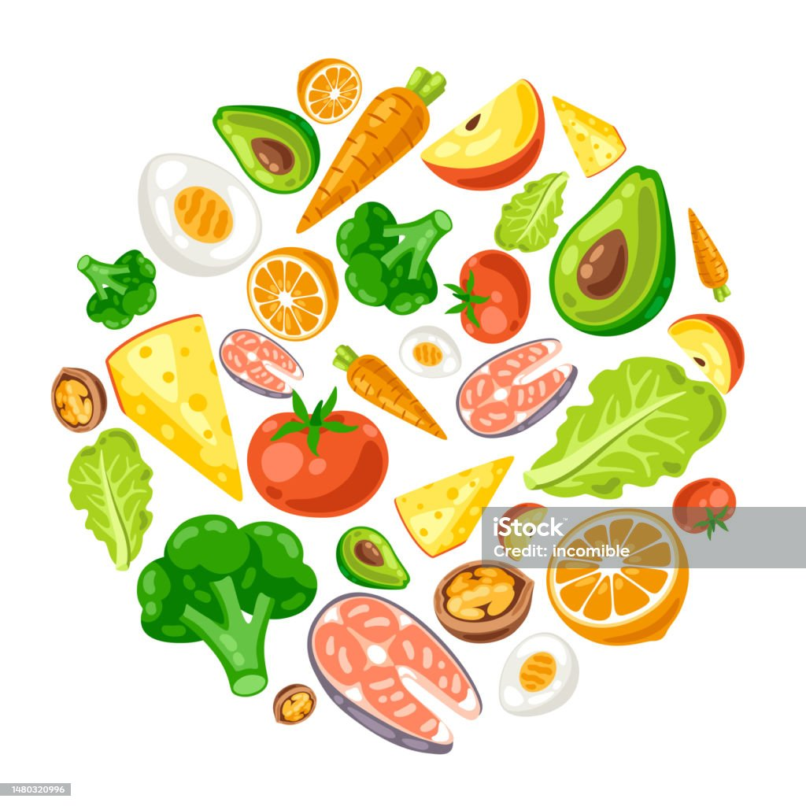

Kesehatan
Apa itu Kesehatan?
Kesehatan adalah kondisi fisik, mental, dan sosial yang baik atau optimal dari individu atau populasi. Ini mencakup berbagai aspek dan komponen yang berkontribusi pada keadaan umum kesejahteraan seseorang. Beberapa elemen utama kesehatan termasuk:
- Kesehatan Fisik: Ini mencakup aspek-aspek seperti kebugaran fisik, fungsi organ tubuh, kemampuan untuk bergerak dan beraktivitas tanpa hambatan, dan kebebasan dari penyakit dan gangguan fisik. Nutrisi yang baik, olahraga teratur, tidur yang cukup, dan pencegahan penyakit adalah faktor-faktor penting dalam menjaga kesehatan fisik.
- Kesehatan Mental: Kesehatan mental mencakup kesejahteraan psikologis seseorang. Ini termasuk kemampuan untuk mengatasi stres, mengelola emosi, memiliki kepercayaan diri yang sehat, dan berfungsi dengan baik dalam kehidupan sehari-hari. Permasalahan kesehatan mental seperti kecemasan, depresi, dan gangguan mental lainnya juga masuk dalam lingkup kesehatan mental.
- Kesehatan Sosial: Kesehatan sosial mencakup hubungan individu dengan orang lain dan komunitas. Ini termasuk dukungan sosial, interaksi sosial yang positif, dan keterlibatan dalam aktivitas sosial dan komunitas. Kesehatan sosial yang baik dapat berdampak positif pada kesejahteraan secara keseluruhan.
- Lingkungan Hidup: Kesehatan juga dipengaruhi oleh lingkungan fisik tempat seseorang tinggal dan bekerja. Lingkungan yang bersih, aman, dan berkelanjutan dapat membantu menjaga kesehatan.
- Akses Terhadap Perawatan Kesehatan: Akses yang baik ke perawatan medis dan pelayanan kesehatan adalah faktor kunci dalam menjaga dan memulihkan kesehatan. Ini mencakup kunjungan ke dokter, perawatan preventif, diagnosis dan pengobatan penyakit, dan manajemen kondisi kronis.
Manfaat Olahraga
Olahraga memiliki banyak manfaat bagi kesehatan fisik, mental, dan emosional. Berikut adalah beberapa manfaat utama dari berolahraga secara teratur:
- Meningkatkan Kebugaran Fisik: Olahraga membantu meningkatkan daya tahan kardiovaskular, kekuatan otot, dan fleksibilitas tubuh. Ini dapat membantu Anda menjalani kehidupan sehari-hari dengan lebih efisien dan energi yang lebih tinggi.
- Menjaga Berat Badan Sehat: Berolahraga secara teratur membantu membakar kalori, yang dapat membantu menjaga berat badan yang sehat dan mengontrol berat badan. Ini juga dapat membantu dalam upaya penurunan berat badan jika diperlukan.
- Meningkatkan Kesehatan Jantung: Olahraga yang teratur dapat mengurangi risiko penyakit jantung dengan meningkatkan kesehatan pembuluh darah, menurunkan tekanan darah, dan mengurangi kadar kolesterol jahat (LDL) dalam darah.
- Mengurangi Risiko Penyakit Kronis: Berolahraga dapat mengurangi risiko berbagai penyakit kronis, termasuk diabetes tipe 2, osteoporosis, dan beberapa jenis kanker.
- Meningkatkan Kesehatan Mental: Olahraga dapat merangsang pelepasan endorfin, hormon yang membuat Anda merasa lebih bahagia dan relaks. Ini dapat membantu mengurangi stres, kecemasan, dan depresi.
Makanan Sehat
Makanan sehat adalah makanan yang memberikan nutrisi penting bagi tubuh tanpa memberikan terlalu banyak kalori atau bahan tambahan yang tidak sehat. Makanan sehat dapat membantu menjaga kesehatan fisik dan mental serta mencegah berbagai penyakit kronis. Berikut adalah beberapa contoh makanan sehat yang sebaiknya dimasukkan ke dalam pola makan Anda:
- Sayuran: Sayuran seperti brokoli, bayam, wortel, kubis, dan paprika adalah sumber serat, vitamin, dan mineral yang penting. Mereka rendah kalori dan membantu menjaga pencernaan yang sehat.
- Buah-buahan: Buah-buahan seperti apel, pisang, jeruk, dan beri adalah sumber vitamin, mineral, serat, dan antioksidan. Mereka juga memberikan energi yang sehat.
- Protein Sehat: Pilihan protein sehat termasuk ayam tanpa kulit, ikan, daging tanpa lemak, telur, kacang-kacangan, dan tahu. Protein diperlukan untuk pertumbuhan dan perbaikan jaringan tubuh.
| No | Nama | Usia | Jenis kelamin | Tekanan darah (mmHg) | kolesterol (mg/dL) | Gula darah (mg/dL) | Status gula darah |
|---|---|---|---|---|---|---|---|
| 1 | Jhon | 45 | Laki-laki | 120/80 | 180 | 95 | Normal |
| 2 | Sarah | 32 | Perempuan | 180/85 | 200 | 110 | Pradiabetes |
| 3 | Michael | 55 | Laki-laki | 140/90 | 220 | 120 | Diabetes |
| 4 | Emily | 28 | Perempuan | 110/70 | 160 | 85 | Normal |
| 5 | David | 60 | Laki-laki | 150/95 | 240 | 130 | Diabetes |
| 6 | Lisa | 42 | Perempuan | 125/80 | 190 | 105 | Pradiabetes |
| 7 | Jessica | 50 | Perempuan | 135/88 | 210 | 115 | Pradiabetes |
| 8 | William | 47 | Laki-laki | 130/85 | 195 | 100 | Normal |
| 9 | Olivia | 35 | Perempuan | 118/75 | 170 | 92 | Normal |
| 10 | Ethan | 52 | Laki-laki | 145/92 | 225 | 125 | Diabetes |